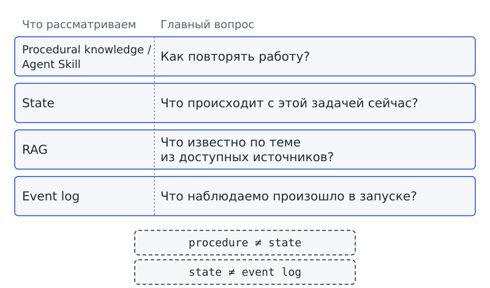
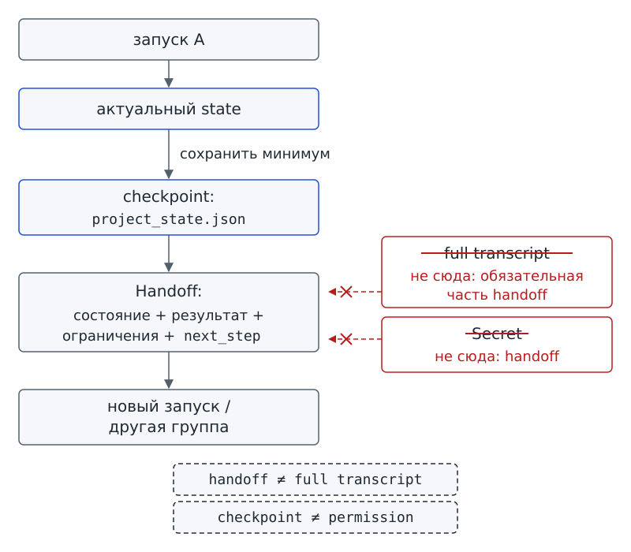

Глава 10. Состояние и память¶
С чего всё началось¶
В пятницу очередной запуск программы-помощника «Дежурный» остановился со знакомым исходом: needs_input. Для task-003 не хватало уточнения по размерам стенда, поэтому подготовить обоснованную статус-сводку до конца не удалось. Аня написала дизайнерской группе и закрыла ноутбук: ответ обещали прислать в понедельник.
В понедельник ответ пришёл. Но компьютер уже перезапустили, терминал закрыли, а пятничный запуск закончился. Каталог project-status/ остался на месте. В файлах процедуры по-прежнему записано, как прочитать и проверить карточки, а затем подготовить сводку. Только записи о пятничной остановке и об ожидаемом ответе в процедуре нет.
— Запишем всё это прямо в SKILL.md, — предлагает Марк. — И на всякий случай сохраним весь чат. Тогда точно ничего не потеряется.
Аня кладёт рядом три вещи: SKILL.md, длинную стенограмму пятничной работы и маленькую пустую карточку с заголовком project_state. Затем Аня спрашивает тебя: что новому запуску действительно нужно знать для продолжения, а что хранится совсем для другой цели?
Вопрос-Прогноз. Что должно пережить перезапуск: вся переписка, Agent Skill, текущее состояние, журнал событий, найденные факты — или разные части нужно хранить раздельно? Запиши минимальный набор, который позволил бы продолжить работу после
needs_input.Главный вопрос главы. Где хранить процедуру, текущие данные и факты?
Фигура 27. Понедельник после needs_input
После главы ты сможешь¶
- объяснять, почему Agent Skill хранит способ работы, а не текущее положение конкретной задачи;
- различать способ работы, актуальные данные, внешние факты и журнал событий по их роли;
- объяснять, почему слово «память» требует уточнить конкретный механизм;
- выбирать минимальные данные для
project_state.json; - сохранять состояние так, чтобы продолжить работу после прерывания, и составлять передачу работы, по которой другая группа понимает следующий шаг без полной истории чата;
- объяснять, почему значение доступа к защищённому ресурсу нельзя переносить вместе с обычным состоянием;
- проверять состояние на случаях «должен / не должен / ошибка / граница».
Урок 19. Состояние, память, RAG и журнал — не одно и то же¶
1. Процедура не знает, что произошло сегодня¶
В главе 9 мы подготовили Agent Skill project-status, который хранит повторяемый порядок работы. Когда завтра понадобится новая статус-сводка, порядок по-прежнему пригодится:
- Получить нужную справку.
- Прочитать карточки.
- Проверить карточки.
- Подготовить статус-сводку.
На первый взгляд предложение Марка удобно: если записать всё в SKILL.md, нужные сведения будут в одном месте. Но строки «сегодня уже прочитали task-001» и «ждём ответа дизайнеров по task-003» меняются вместе с конкретной работой. Порядок подготовки сводки при этом может остаться прежним. Если смешать порядок и текущие сведения, придётся переписывать файл процедуры после каждого запуска.
Запись о том, как повторять работу, отвечает на другой вопрос, чем запись о сегодняшней остановке. Назовём сначала знание о способе работы.
Procedural knowledge / процедурное знание — знание о том, как выполнять повторяемую работу.
Procedural knowledge («процедурное знание») отвечает на вопрос «как обычно делается такая работа?». В нашем курсе Agent Skill служит способом записать процедуру: в SKILL.md находятся шаги и ограничения, а дополнительные ресурсы программа загружает по необходимости.
Процедурное знание само по себе не сообщает, какой шаг уже выполнен сегодня. Ответ Ани и сведения о карточке, которая сейчас заблокирована, тоже относятся к текущей работе, а не к порядку её повторения.
Сравним процедуру с рецептом блюда, а текущие рабочие данные — с листом конкретного заказа. Рецепт объясняет, как готовить; лист заказа сообщает: «суп готов, десерт ждёт». Рецепт не приходится менять только потому, что повар закончил суп. Сходство касается назначения записей: в программе состав полей определяет приложение, а не устройство бумажного рецепта.
Проверь себя на ходу. Фраза «после чтения карточек проверь каждую обязательную строку» относится к procedural knowledge. А куда отнести фразу «
task-003уже проверена и ждёт уточнения» — и почему?
2. State: что происходит с этой работой сейчас¶
В главе 2 состояние хранилось внутри одного запуска в словаре Python. Словарь связывает имена полей с их значениями: программа могла узнать текущий phase, прочитать счётчики и последний observation, а также проверить признаки завершения. Теперь нужен ответ ещё на один вопрос: какие рабочие сведения должны сохраниться для следующего запуска?
Состояние / state — актуальные данные конкретной работы, необходимые для следующего шага или следующего запуска.
State («состояние») отвечает на вопрос «что происходит с этой задачей сейчас?». Пока программа работает, следующий шаг может зависеть от текущего phase, числа выполненных действий и полученных observations — наблюдений. Для нового запуска нужны только те проверенные рабочие данные, которые позволяют определить, откуда продолжать. Набор данных внутри запуска и набор, передаваемый следующему запуску, не обязательно совпадают.
Состояние не обязано содержать всю историю. В state не нужно копировать Agent Skill или весь event log только потому, что программа имеет доступ к этим данным. Каждая сохранённая запись должна помогать следующему шагу.
Допустим, размеры стенда уже пришли, но карточку ещё не проверили повторно. Запись «ждём размеров» больше не описывает текущее положение. Для продолжения нужно зафиксировать, что ответ получен и предстоит повторная проверка. Получить ответ и закончить проверку — два разных действия.
В существующем run_agent состояние текущего запуска хранится в обычном словаре Python. Начало словаря видно во фрагменте school_agent/agent.py из starter; чтобы прочитать запись, достаточно различать имена полей и значения после двоеточий:
# фрагмент: school_agent/agent.py
state = {"phase": "start", "steps": 0, "failures": 0, "model_turns": 0,
"context_requests": 0, "done": False}
Поля словаря нужны работающему harness — программной среде вокруг модели. Однако словарь в оперативной памяти компьютера не становится сохранённым файлом сам по себе. После завершения процесса объект словаря исчезнет. Для следующего запуска приложение должно отдельно сохранить нужные рабочие данные.
3. Одного слова «память» недостаточно¶
Марк называет все перечисленные записи памятью. В бытовом разговоре просьба «пусть агент запомнит» звучит понятно. Но сможет ли разработчик по одной этой просьбе выбрать, что и где хранить? Не сможет: для сохранения порядка работы и для сохранения места остановки нужны разные решения.
В нашем курсе действует правило: память агента — не самостоятельный единый механизм, а общее слово, требующее уточнения.
Услышав предложение «добавим память», уточни задачу:
- Нужно ли сохранить текущий state?
- Нужно ли получать факты из внешних источников?
- Нужно ли оставлять журнал наблюдаемых событий?
- Нужно ли хранить процедуру?
- Нужно ли передавать следующему запуску сохранённое состояние?
Словом «память» пользоваться можно. Но само слово не указывает ни состав данных, ни способ хранения, поэтому не заменяет решения о том, какой механизм нужен системе.
4. Факты из внешнего поискового слоя¶
Представь, что для статус-сводки нужно узнать расписание Фестиваля из отдельной базы документов. Расписание не задаёт шаги SKILL.md и не описывает текущий phase. Приложению нужно найти подходящий материал во внешнем источнике и передать найденные сведения модели.
RAG / Retrieval-Augmented Generation — получение релевантных фактических материалов из внешнего поискового слоя и предоставление их модели.
Название RAG можно перевести как «генерация с дополнением найденными материалами». Описанный механизм отвечает на вопрос «что известно по теме из доступных источников?». Приложение отбирает материалы, относящиеся к вопросу, а не передаёт все прошлые разговоры. В практиках этой главы поиск не подключается и RAG-система не создаётся: мы только различаем назначения механизмов.
RAG не заменяет state. Найденный документ может сообщить дату Фестиваля, но не содержать записи о том, что конкретный запуск уже проверил task-003. RAG не заменяет и Agent Skill: из фактического материала самого по себе не следует порядок повторяемой работы.
Проверь себя на ходу. Внешняя база вернула актуальное расписание кабинетов. Это state текущей работы или материал RAG? Что ещё нужно знать, чтобы решить, какой шаг выполнять дальше?
5. Event log: что произошло, а не что нужно делать дальше¶
В главе 7 мы ввели Event log / журнал событий. В журнале последовательно записываются наблюдаемые события запуска: запрос tool, результат или ошибка, принятое решение. При этом event log главы 7 ещё не следует называть формальным Trace главы 12.
Нужен ли новому запуску весь журнал, чтобы продолжить работу? Не обязательно. Event log отвечает на вопрос «какие наблюдаемые события произошли и в каком порядке?». State отвечает на другой вопрос: «какие актуальные данные нужны для следующего шага?». Некоторые сведения могут встречаться и в журнале, и в состоянии, но назначение записей различается.
Допустим, event log содержит двадцать событий: запрос сменяется observation, затем следует решение и новый запрос. Для продолжения после перезапуска может оказаться достаточно пяти полей:
- Цель указывает, какую работу нужно продолжить.
- Текущий статус показывает, в каком положении находится работа.
- Проверенный блокер сообщает, что мешает продолжению.
- Ожидаемое уточнение показывает, каких сведений не хватает.
- Следующий шаг указывает, что делать после получения ответа.
В условном примере двадцать событий описывают ход работы, а пять полей помогают продолжить работу. Из такого сопоставления не следует, что любой журнал можно заменить пятью полями: состав состояния зависит от задачи.
Формальную структуру Trace и работу с ним мы разберём в главе 12. Для нынешней задачи достаточно различать журнал произошедших событий и актуальные данные для продолжения.
6. Центральная матрица: четыре разных вопроса¶
Сопоставим четыре механизма по вопросам, на которые они отвечают. Когда слово «память» не помогает выбрать место хранения, найди нужный вопрос в колонке «Главный вопрос».
| Что рассматриваем | Главный вопрос | Что там уместно | Что туда не складываем |
|---|---|---|---|
| Procedural knowledge / Agent Skill | Как повторять работу? | шаги, ограничения, нужные references | текущий phase, ответ Ани, значения доступа |
| State | Что происходит с этой задачей сейчас? | актуальные данные для следующего шага | полную процедуру, всю стенограмму |
| RAG | Что известно по теме из доступных источников? | релевантные фактические материалы | ход выполнения конкретного запуска |
| Event log | Что наблюдаемо произошло в запуске? | запросы, observations, решения | скрытые рассуждения, значения доступа |
Из таблицы следуют две границы:
procedure ≠ state
state ≠ event log
Первая граница отделяет порядок работы в SKILL.md от текущих рабочих записей. Вторая позволяет выбирать нужное состояние, не копируя весь журнал. В уроке 20 добавится ещё одна граница: что передавать между запусками.

Фигура 28. Не одна память
7. Практика A: пятнадцать карточек хранения¶
Объединись с одноклассниками в группу из трёх-четырёх человек. Получи вместе с группой пятнадцать карточек и распредели записи по колонкам:
procedural knowledge;state;RAG;event log.
Карточки с чувствительными или лишними данными помести в область «требует отдельного решения/не хранить в учебном project_state».
Среди карточек могут встретиться следующие записи:
- «сначала прочитать карточки, затем проверить обязательные поля»;
- «
task-003ждёт размеров стенда»; - «расписание кабинетов найдено в базе материалов»;
- «tool
read_task_cardsвернул count=3»; - «API-токен внешнего сервиса»;
- «полная стенограмма пятничного чата»;
- «следующий шаг — после ответа Ани повторно проверить
task-003»; - «порядок действий при неоднозначности»;
- «время события tool_observation»;
- «личный телефон участника команды».
Для каждой карточки запиши не только выбранную колонку, но и вопрос, на который отвечает запись. Обсуди выбор с группой. Объяснения «это вроде память» недостаточно: нужно назвать роль данных.
Результат практики A: таблица пятнадцати карточек и три объяснённые границы: procedure/state, state/event log, рабочие данные/чувствительные данные.
8. Практика B: процедура остаётся отдельно¶
Сначала загрузи инструкции уже принятого Agent Skill. Следующая команда показывает слой инструкций project-status, но не меняет файлы:
# запуск из корня starter
python skill_demo.py load project-status
layer: instructions
skill: project-status
SKILL.md: loaded
frontmatter fields: name, description, compatibility
instructions lines: 22
supporting files:
references/report-template.md (references)
references/task-card-format.md (references)
assets/example-report.md (assets)
scripts/validate_cards.py (scripts)
resources read: no
scripts executed: no
Вывод сообщает о загрузке SKILL.md и перечисляет дополнительные файлы. Строки resources read: no и scripts executed: no показывают, что содержимое дополнительных ресурсов не читалось и программы из каталога не выполнялись. Сведений о том, что «task-003 ждёт ответ Ани», вывод не содержит. Порядок работы по-прежнему отделён от истории конкретного запуска.
Для текущих рабочих данных нужен отдельный документ. В starter различие между процедурой и состоянием показывает учебная программа state_demo.py. Программа работает с локальными учебными данными, не создаёт второй Agent Skill и не заменяет run_agent.
Перед следующей командой сделай прогноз: почему строка project_state.json -> Agent Skill была бы неверной вместо project_state.json -> state?
# запуск из корня starter
python state_demo.py classify
SKILL.md -> procedural knowledge | как повторять работу?
project_state.json -> state | что происходит с этой работой сейчас?
retrieved festival schedule -> RAG | что известно по теме из доступных источников?
tool_observation event -> event log | что наблюдаемо произошло в запуске?
После запуска сравни прогноз со строкой project_state.json -> state. Объясни различие между процедурой и состоянием без слова «просто».
Результат практики B: две заполненные колонки «процедура / текущее состояние», одна выполненная команда главы 9 и один классификационный прогон главы 10.
9. Мини-проверка урока 19¶
- Что хранит procedural knowledge?
- Какой главный вопрос state?
- Почему Agent Skill не должен содержать текущий статус
task-003? - Какой вопрос решает RAG?
- Чем state отличается от event log?
- Почему фраза «добавим память агенту» недостаточна для проектирования?
Ответы¶
- Знание о том, как выполнять повторяемую работу; в курсе оно может быть оформлено как Agent Skill.
- «Что происходит с этой задачей сейчас?»
- Потому что Agent Skill хранит переносимую процедуру, а текущий статус относится к конкретной работе.
- «Что известно по теме из доступных источников?» — через получение релевантных фактических материалов.
- State хранит актуальные данные для следующего шага; event log — последовательность наблюдаемых событий запуска.
- Потому что нужно назвать конкретный механизм и задачу хранения: state, RAG, журнал, защищённое хранилище и т. п.
Выходной билет урока 19¶
Заполни четыре строки одним коротким примером из Фестиваля науки:
как делать → …
что происходит сейчас → …
что известно из внешних источников → …
что произошло в запуске → …
Если один и тот же пример оказался во всех четырёх строках, вернись к центральной матрице и снова задай четыре разных вопроса.
Урок 20. Как передать работу следующему запуску¶
1. State в памяти программы недостаточно после остановки¶
В пятницу run_agent мог хранить состояние в словаре Python. Пока программа работала, очередной шаг получал из словаря текущий phase, счётчики и observations. Но в понедельник начинается новый запуск: прежнего объекта в памяти программы уже может не быть.
Что позволит продолжить работу, если прежний объект исчез? Сохранённые отдельно данные о месте остановки. Нужен снимок полезного состояния, а не всей памяти компьютера и не полного чата.
Checkpoint / контрольная точка состояния — сохранённое состояние, по которому работу можно продолжить после прерывания.
Checkpoint («контрольная точка состояния») позволяет после закрытия программы определить, откуда продолжить работу. В нашем проекте сохранённое состояние будет находиться в project_state.json.
Checkpoint не обязан повторять event log строка за строкой. Сохранённое состояние не служит резервной копией всего проекта и не гарантирует правильности записанных данных. Приложение должно проверить формат файла: одного имени project_state.json недостаточно, чтобы доверять содержимому.
2. Что должно попасть в project_state.json¶
Вернёмся к пятничной остановке. После получения Аней ответа новому запуску не обязательно читать каждую реплику чата. Для продолжения нужны цель, место остановки и сведения о том, какой шаг зависит от уточнения дизайнеров.
В учебном состоянии записано шесть полей. Шаблон находится в starter, в файле workspace/ch10/templates/project_state.json:
{
"project": "science-festival",
"goal": "подготовить статус-сводку",
"status": "needs_input",
"blocked_tasks": ["task-003"],
"pending_question": "Уточнить размеры стенда у дизайнеров",
"next_step": "После ответа снова проверить task-003"
}
Каждое из шести полей связано с продолжением работы:
projectуказывает, к какому проекту относятся данные.goalнапоминает, какую работу нужно продолжить.statusсообщает об остановке в ожидании сведений.blocked_tasksперечисляет заблокированные задачи.pending_questionсохраняет вопрос, ответ на который ещё нужен.next_stepсообщает, что делать после получения ответа.
В условном примере урока 19 мы назвали пять рабочих полей. В шаблоне к ним добавлено имя проекта, поэтому полей шесть. Число полей определяется задачей, а не требованием всегда сохранять ровно пять записей.
Если поле не помогает продолжению, доступность сведений сама по себе не служит основанием для сохранения. Такой отбор следует правилу безопасности. Data minimization / минимизация данных — хранить и передавать только те данные, которые нужны следующему шагу или передаче работы. Применяя минимизацию данных, сначала назови действие, которому поможет поле. Если нужного действия нет, поле не включают в состояние. Историю можно хранить отдельно для другой задачи, но копировать историю в состояние и передачу «на всякий случай» нельзя. Реальные персональные сведения в учебное состояние не помещают.
Допустим, в переписке обсуждался цвет афиши, а ближайший шаг требует только проверить размеры стенда. При таком условии цвет афиши не помогает продолжению. Для работы над самой афишей цвет мог бы понадобиться: лишними данные становятся относительно конкретной задачи.
3. Checkpoint должен быть проверяемым¶
Легко решить, что существующего JSON-файла уже достаточно для продолжения. Но что произойдёт, если из файла исчез next_step? Новый запуск может узнать о блокере и всё же не понять, какое действие ожидалось после ответа.
Поэтому приложение должно проверить обязательные поля и отклонить документ, по которому нельзя однозначно определить продолжение. Сначала запусти проверку полного учебного состояния:
# запуск из корня starter
python state_demo.py resume workspace/ch10/cases/project_state_ready.json
checkpoint: loaded
project: science-festival
status: needs_input
blocked tasks: task-003
next step: После ответа снова проверить task-003
result: resumable
В полном случае программа сообщает result: resumable: состояние принято как пригодное для продолжения. Напечатанный вывод показывает статус и следующий шаг, но не показывает выполнение повторной проверки карточки.
Теперь проверь неполное состояние:
# запуск из корня starter
python state_demo.py resume workspace/ch10/cases/project_state_missing_next_step.json
checkpoint: not accepted
error: missing field next_step
result: not resumable
Строка not resumable означает, что состояние не принято для продолжения. Для этой учебной работы поле next_step обязательно. Если следующий шаг не записан, человек должен восстановить недостающие сведения; программа не подменяет отсутствие данных догадкой.
Проверь себя на ходу. Файл состояния содержит цель и список блокеров, но не содержит
next_step. Почему честный статус «not resumable» полезнее, чем попытка программы догадаться, что делать дальше?
4. Сохранить checkpoint — не значит переписать исходные карточки¶
В сквозном проекте нужно различать состояние работы и данные доски. В workspace/tasks/ находятся карточки задач. Сохранение project_state.json не должно менять статусы карточек или давать приложению ещё один способ записи в доску.
Команда checkpoint сохраняет отдельный рабочий снимок в области черновиков. Сохранение снимка не заменяет будущее подтверждение человеком при изменении карточек и не расширяет permissions — технически заданные права на чтение, запись, сеть, процессы или другие ресурсы. Выполни команду:
# запуск из корня starter
python state_demo.py checkpoint workspace/ch10/cases/project_state_ready.json --out drafts/ch10/project_state.json
checkpoint: saved
path: drafts/ch10/project_state.json
fields: project, goal, status, blocked_tasks, pending_question, next_step
project cards changed: no
result: ready for resume
Вывод сообщает, что checkpoint сохранён, а карточки проекта не изменены. Показ касается только локального сохранения подготовленного учебного состояния; надёжность файловой системы и пригодность формата для промышленной системы такой показ не доказывает.
В starter запись устроена в два действия: сначала программа записывает данные во временный файл, затем заменяет целевой файл временным. Такая атомарная запись нужна, чтобы при сбое не остался на диске наполовину записанный файл состояния. Из одного успешного сохранения нельзя заключить, как запись поведёт себя при любом сбое.
5. Защищаемое значение нельзя тащить вместе со state¶
Марк предлагает добавить в project_state.json всё, что может понадобиться следующему запуску, включая токен доступа к внешнему сервису. Но токен отличается от рабочего факта: значение токена даёт доступ к защищённому ресурсу. Копирование такого значения требует отдельного решения о защите.
Secret / секрет — значение, дающее доступ к защищённому ресурсу, например API-токен.
Secret («секрет») нельзя рассматривать как обычную важную заметку. Получив секрет, посторонний человек или программа может получить и доступ к защищённому ресурсу.
Название поля private не защищает записанный внутри секрет. В нашем курсе Secret запрещено хранить в обычном коде, SKILL.md, учебном репозитории или trace. Секрет также не включают в project_state.json и передачу работы.
В реальных системах секреты передают программе через отдельный защищённый механизм среды выполнения или хранилище секретов. Здесь конкретный продукт и его синтаксис не выбираются. Рабочее состояние и значение, дающее доступ к ресурсу, требуют разных режимов хранения.
6. Передача для продолжения — не архив всего¶
Если в понедельник работу продолжит другая группа вместо Ани, что нужно передать исполнителям? Одного сообщения «файл сохранён» недостаточно. Группа должна получить сведения о проекте и месте остановки, готовые результаты, действующие ограничения и следующий шаг.
Представь, что черновик сводки уже подготовлен, но отправлять сводку пока нельзя. Передача одного черновика не сообщит новой группе о запрете. Вместе с результатом нужно передать ограничение: готовность текста ещё не даёт разрешения на отправку.
Handoff / передача работы — структурированная передача следующему исполнителю или запуску состояния, результатов и необходимых ограничений.
Handoff («передача работы») отвечает на вопрос «что другому исполнителю нужно получить, чтобы продолжить работу без устного пересказа?». Здесь используется минимальный вариант передачи. Системную архитектуру долгой совместной работы мы разберём только в главе 16.
Для Handoff не требуется полный чат или все промежуточные события, а Secret в передачу не включают. Достаточность передачи определяется возможностью продолжить работу, а не количеством скопированных записей.
Проследим, как состояние переходит от одного запуска к следующему:
запуск A
↓
актуальный state
↓ сохранить минимум
checkpoint: project_state.json
↓
Handoff: состояние + результат + ограничения + next_step
↓
новый запуск / другая группа
Две дополнительные строки показывают границы передачи. Полная стенограмма не становится обязательной частью handoff, а Secret в handoff не передают:
full transcript ─X→ обязательная часть handoff
Secret ─X→ handoff

Фигура 29. Пережить перезапуск
7. Практика A: передай проект другой группе¶
Если ты работаешь в первой группе, получи сцену пятницы: «сводка не завершена, task-003 заблокирована, дизайнеры должны уточнить размеры». Вместе с группой составь handoff на одном листе. Используй только четыре раздела:
цель;актуальное состояние;готовый результат/факт;следующий шаг и ограничения.
Если ты работаешь во второй группе, получи только лист handoff и карточку с новым ответом дизайнеров. Не запрашивай устных пояснений у первой группы. По переданным материалам назови:
- Что уже известно.
- Чего больше не нужно спрашивать.
- Какой следующий шаг нужно выполнить.
После передачи сравни вместе с обеими группами handoff и полную стенограмму. Найди не менее трёх элементов стенограммы, которые не нужны для продолжения. Такими элементами могут оказаться:
- приветствия;
- повторы формулировки задачи;
- обсуждения вариантов, не нужные следующему шагу;
- уже закрытые организационные реплики.
История разговора может быть полезна для другой задачи. Но архив разговора и handoff нужны для разных целей.
Результат практики A: handoff на одной странице, по которому вместе с карточкой ответа другая группа без устного объяснения правильно называет заблокированную задачу, полученный ответ и следующий шаг.
8. Практика B: построить handoff и проверить границу Secret¶
Сначала выполни команду для состояния, которое соответствует учебным требованиям:
# запуск из корня starter
python state_demo.py handoff workspace/ch10/cases/project_state_ready.json
handoff: built
project: science-festival
status: needs_input
blocked tasks: task-003
next step: После ответа снова проверить task-003
full transcript included: no
secret fields included: 0
result: accepted
Затем проверь граничный случай. Подготовленная учебная фикстура — файл с заранее заданными данными для проверки — содержит запрещённое поле secret. Значение поля программа не печатает:
# запуск из корня starter
python state_demo.py handoff workspace/ch10/cases/project_state_with_secret.json
handoff: not built
error: forbidden secret field
secret value printed: no
result: not accepted
Сопоставь два результата. В первом случае handoff принят, полная стенограмма не включена, число включённых секретных полей равно нулю. Во втором случае программа отказывается строить handoff из-за поля secret и не выводит значение поля.
Проверка охватывает два требования: не переносить запрещённое значение и не раскрывать значение при сообщении об ошибке. Сокращение stdout обозначает стандартный вывод программы; секрет не должен попадать в этот вывод.
Результат практики B: один сохранённый checkpoint в workspace/drafts/ch10/, два сценария resume и два сценария handoff с объяснением, какое свойство проверял каждый сценарий: пригодность состояния, отсутствие обязательной стенограммы или отказ на Secret без раскрытия значения.
9. Обязательные проверки: должен / не должен / ошибка / граница¶
Должен. Полный учебный project_state с обязательным next_step должен загрузиться как result: resumable. Для проверки найди в выводе текущий статус и следующий шаг. Полный чат программе для этой проверки не нужен.
Не должен. Handoff не должен автоматически включать полную стенограмму. В положительном сценарии найди строку full transcript included: no: отказ от включения стенограммы задан как проверяемое требование.
Ошибка. Checkpoint без next_step не должен приниматься как пригодный для продолжения. В неполном случае программа печатает missing field next_step и result: not resumable.
Граница. Документ с полем Secret не должен приниматься для построения handoff; само значение поля не должно появляться в выводе. В граничном сценарии проверь три строки:
forbidden secret field;secret value printed: no;result: not accepted.
Четыре случая проверяют только учебный контракт локального состояния и передачи. Из результатов не следует, что файловое хранилище защищено операционной системой или что записанные сведения истинны. Проверки также не показывают, умеет ли реальная модель правильно выбирать данные для сохранения.
10. Безопасность¶
Безопасность
Сохраняй не максимум доступных данных, а минимум, необходимый для следующего шага. Применяй минимизацию данных из урока 20. Чем больше лишней истории ты копируешь между запусками, тем больше риск перенести персональные сведения, недоверенный текст или данные, которые уже не нужны задаче.
Secret храни отдельно от обычного кода,
SKILL.md, репозитория,project_state.json, event log и Handoff. Текст внутри JSON не задаёт защищённый режим хранения.Checkpoint не выдаёт новых permissions и не меняет карточки проекта. Handoff передаёт состояние и ограничения, но не даёт разрешения на действие.
В учебных примерах нет реальных токенов и персональных данных. Значение запрещённого поля в граничном сценарии не печатается.
11. Мини-проверка урока 20¶
- Что делает checkpoint?
- Почему checkpoint не обязан содержать весь event log?
- Как понять, что поле стоит включить в
project_state.json? - Что такое Secret?
- Почему имя поля
privateне делает значение защищённым? - Что передаёт Handoff?
- Почему Handoff не равен полной истории чата?
Ответы¶
- Сохраняет состояние, по которому работу можно продолжить после прерывания.
- Потому что event log хранит последовательность событий, а checkpoint — актуальные данные, нужные для продолжения.
- Нужно уметь объяснить, какой следующий шаг или решение зависит от этого поля.
- Значение, дающее доступ к защищённому ресурсу, например API-токен.
- Режим доступа задаётся средой и хранилищем, а не текстом внутри данных.
- Состояние, результаты и необходимые ограничения следующему исполнителю или запуску.
- Потому что для продолжения нужен отобранный рабочий минимум, а не все реплики и промежуточные события.
Выходной билет урока 20¶
Закончи три строки:
checkpoint нужен, чтобы …
handoff нужен, чтобы …
Secret нельзя класть в handoff, потому что …
Добавь одно поле, которое ты не стал бы включать в project_state.json. Объясни, какому следующему шагу поле не помогает.
Полная карта главы¶
Как связаны механизмы из двух уроков? Схема показывает отдельно порядок работы, актуальное состояние и материалы из источников. Для состояния выделены хранение внутри запуска и сохранение между запусками:
«память агента»
требует уточнить механизм
│
┌────────────────┼────────────────┐
│ │ │
как повторять что сейчас что известно
работу? происходит? из источников?
│ │ │
procedural state RAG
knowledge │
│ ├── внутри запуска: state run_agent
Agent Skill │
SKILL.md └── между запусками: checkpoint
│
project_state.json
│
↓
Handoff
↓
новый запуск / другая группа
отдельно:
event log = что наблюдаемо произошло
Secret = защищаемое значение, не часть handoff
На схеме нет одной общей коробки memory. Сначала нужно назвать вопрос, на который должны отвечать данные, и только затем выбрать механизм. В предложении Марка «давайте просто всё запомним» как раз не было такого разделения.
Зачем это тебе¶
-
В командном школьном проекте работа может длиться несколько недель. В пятницу твоя группа остановилась на вопросе к учителю, а в понедельник продолжает работу. Если сохранён только длинный чат, новой группе придётся искать в переписке место остановки. Короткий checkpoint с текущим статусом и
next_stepпозволяет проверить, какие сведения переданы для продолжения. -
При подготовке лабораторной работы инструкция «как оформлять измерения» может оставаться постоянной процедурой. Значения сегодняшнего опыта относятся к текущему state. Журнал эксперимента хранит события и наблюдения, а справочник физических констант может поступать из отдельного источника. Когда все записи смешаны в одном документе, труднее понять, что нужно менять при новом опыте.
-
Школьной программе-помощнику для работы с внешним сервисом может понадобиться Secret. Однако необходимость доступа не даёт основания пересылать токен вместе с handoff однокласснику. Передай цель, проверенный результат и следующий шаг; доступ к защищённому ресурсу нужно организовать отдельно.
Шаг сквозного проекта¶
После главы 9 у «Дежурного» есть переносимая процедура project-status. Теперь для конкретной работы появляется отдельный документ project_state.json, а для продолжения другим исполнителем подготавливается минимальный Handoff.
Контрольная точка 5: проект переживает смену команды или перезапуск без полной истории чата.
Команда записывает три решения о хранении и передаче:
SKILL.mdхранит порядок повторяемой работы. Текущие данные конкретного запуска в файл процедуры не включают.project_state.jsonхранит только актуальный минимум, необходимый следующему шагу. Secret в состояние не включают.- Handoff передаёт состояние, результаты, ограничения и
next_step, но не копирует целиком event log или стенограмму.
Достраиваем «Дежурног
Подготовь 10_state.json с содержимым {}; дальше учебное состояние обновляет harness. Для двух команд ниже используется папка-пример workspace/my_agent/examples/ch10. Выполни команды именно подряд, ничего не вставляя между ними: второй run читает состояние, записанное первым.
Образец показывает пару запусков, которая начинается без предыдущей истории: сначала программа печатает state: первый запуск (запусков теперь: 1), затем — state: предыдущий запуск — success, шагов 5 (запусков теперь: 2). Счётчик вырос с одного запуска до двух, а второй запуск получил итог первого через внешний файл, не через память завершившегося процесса.
Оба запуска выполняют по пять шагов сценария success. Поэтому показ относится к передаче сведений о предыдущем запуске, но не показывает продолжение пятничной работы после needs_input. В state_demo.py отдельно проверялась пригодность сохранённых данных для продолжения.
Команды обращаются к папке-примеру, поэтому в выводе есть строка goal: не настроено (глава 1). В твоей my_agent/ цель уже настроена; смотри на строку своей главы.
# запуск из корня starter
python dezhurny.py run --dir workspace/my_agent/examples/ch10
dezhurny: run
goal: не настроено (глава 1)
config: workspace/my_agent/examples/ch10
model: replay — авторский сценарий, не запись модели
scenario: success
stop_policy: max_steps 5, max_retries 1 (по умолчанию, глава 2)
tools: allowlist диспетчера (по умолчанию, глава 7)
Шаг 1 | read_task_cards | continue
Шаг 2 | validate_task_card | continue
Шаг 3 | validate_task_card | continue
Шаг 4 | validate_task_card | continue
Шаг 5 | build_status_report | success
Остановка: success
# Черновик статуса проекта
Всего задач: 3.
Незавершённых: 2.
Заблокированных: 1.
## Незавершённые задачи
- `task-002` — Подготовить макет афиши (in_progress)
- `task-003` — Проверить список оборудования (blocked)
## Блокеры
- `task-003`: Нет подтверждённого списка оборудования
Черновик. Отправка и изменение карточек не выполнялись.
contract: не настроено (глава 5)
save: не настроено (глава 3)
state: первый запуск (запусков теперь: 1)
trace: не настроено (глава 12)
Качество модели не подтверждено этим техническим прогоном.
# запуск из корня starter
python dezhurny.py run --dir workspace/my_agent/examples/ch10
dezhurny: run
goal: не настроено (глава 1)
config: workspace/my_agent/examples/ch10
model: replay — авторский сценарий, не запись модели
scenario: success
stop_policy: max_steps 5, max_retries 1 (по умолчанию, глава 2)
tools: allowlist диспетчера (по умолчанию, глава 7)
Шаг 1 | read_task_cards | continue
Шаг 2 | validate_task_card | continue
Шаг 3 | validate_task_card | continue
Шаг 4 | validate_task_card | continue
Шаг 5 | build_status_report | success
Остановка: success
# Черновик статуса проекта
Всего задач: 3.
Незавершённых: 2.
Заблокированных: 1.
## Незавершённые задачи
- `task-002` — Подготовить макет афиши (in_progress)
- `task-003` — Проверить список оборудования (blocked)
## Блокеры
- `task-003`: Нет подтверждённого списка оборудования
Черновик. Отправка и изменение карточек не выполнялись.
contract: не настроено (глава 5)
save: не настроено (глава 3)
state: предыдущий запуск — success, шагов 5 (запусков теперь: 2)
trace: не настроено (глава 12)
Качество модели не подтверждено этим техническим прогоном.
Возвращаемся к сцене¶
Поможет ли предложение Марка продолжить пятничную работу? Вся переписка в SKILL.md смешала бы порядок действий с данными одной задачи. Понедельничный ответ, полученный Аней, не нужно записывать в процедуру: порядок работы не изменился. Полный чат тоже не требуется как обязательное состояние, поскольку большинство реплик не определяет следующий шаг.
Для продолжения нужно было сохранить checkpoint со сведениями о работе:
- Какую задачу выполняем.
- Почему остановились.
- Какая карточка заблокирована.
- Какой вопрос задан.
- Что сделать после ответа.
Если работу продолжает другая группа, передай сохранённое состояние вместе с результатом и ограничениями через Handoff. Event log при этом остаётся журналом произошедшего. RAG служит для получения внешних фактов, а Secret хранится отдельно.
Ответом на вопрос-прогноз стало не одно слово «память», а различение механизмов. Процедура, state, внешние факты, журнал событий и защищённые значения нужны для разных задач. Между запусками сохраняют только проверяемое состояние, необходимое для продолжения, и передают состояние через Handoff без Secret и лишней истории.
Проверь себя¶
- Чем procedural knowledge отличается от state?
- Почему Agent Skill не является всей «памятью агента»?
- Что отвечает на вопрос «что происходит с этой задачей сейчас?»
- Какой главный вопрос RAG?
- Чем event log отличается от checkpoint?
- Что такое checkpoint?
- Какие данные нельзя хранить в
SKILL.md, обычном репозитории, event log и Handoff? - Что такое Handoff и почему он не равен полной стенограмме?
- Разбери ситуацию: «Есть процедура подготовки отчёта, текущий блокер
task-003, найденное расписание кабинетов, журнал двух tool calls и токен внешнего сервиса». Разложи пять элементов по механизмам.
Ответы¶
- Procedural knowledge хранит знание о том, как повторять работу; state — актуальные данные конкретной работы, нужные следующему шагу или запуску.
- Потому что «память агента» — общее слово; Agent Skill покрывает только процедуру, а рядом существуют state, RAG, журнал и другие хранилища.
- State.
- «Что известно по теме из доступных источников?» — через получение релевантных фактических материалов из внешнего поискового слоя.
- Event log хранит последовательность наблюдаемых событий; checkpoint — сохранённое актуальное состояние, по которому продолжают работу.
- Сохранённое состояние, по которому работу можно продолжить после прерывания.
- Secret — значения, дающие доступ к защищённым ресурсам, например API-токены.
- Handoff — структурированная передача следующему исполнителю или запуску состояния, результатов и необходимых ограничений. Полная стенограмма содержит много данных, не нужных следующему шагу.
- Процедура → procedural knowledge/Agent Skill;
task-003→ state; расписание → RAG; два tool calls → event log; токен → Secret.
Словарь главы¶
| Термин | Рабочая формулировка |
|---|---|
| Состояние / state | актуальные данные конкретной работы, необходимые для следующего шага или следующего запуска |
| Память агента | не самостоятельный единый механизм, а общее слово, требующее уточнения; в зависимости от задачи могут использоваться состояние, Agent Skill, RAG, журнал, защищённая база и другие хранилища |
| Procedural knowledge / процедурное знание | знание о том, как выполнять повторяемую работу; в курсе Agent Skill рассматривается как способ оформить такую процедуру |
| RAG / Retrieval-Augmented Generation | получение релевантных фактических материалов из внешнего поискового слоя и предоставление их модели |
| Data minimization / минимизация данных | хранить и передавать только те данные, которые нужны следующему шагу или передаче работы |
| Checkpoint / контрольная точка состояния | сохранённое состояние, по которому работу можно продолжить после прерывания |
| Secret / секрет | значение, дающее доступ к защищённому ресурсу, например API-токен; не хранится в обычном коде, SKILL.md, учебном репозитории или trace |
| Handoff / передача работы | структурированная передача следующему исполнителю или запуску состояния, результатов и необходимых ограничений |
Определение Event log ты найдёшь в главе 7. Формальное понятие Trace мы разберём в главе 12.
Мост к главе 11¶
У «Дежурного» теперь разделены процедура и текущее состояние. Для продолжения работы предусмотрены checkpoint и минимальный Handoff. Но подтверждает ли сохранённое состояние, что система правильно выполняет задачу? Нет: возможность продолжить работу и качество результата нужно проверять отдельно.
Представь, что после перезапуска система успешно подготовила статус-сводку. По одному удачному результату легко решить, что система уже работает надёжно. Однако успешный случай не показывает поведения на других входах. Нужно проверить работу с пустыми данными и неоднозначностью, с ошибкой tool и запросом запрещённого действия.
Следующий вопрос. Как доказать качество не одним удачным запуском?
Ответ ты найдёшь в главе 11, «Тесты и evals».